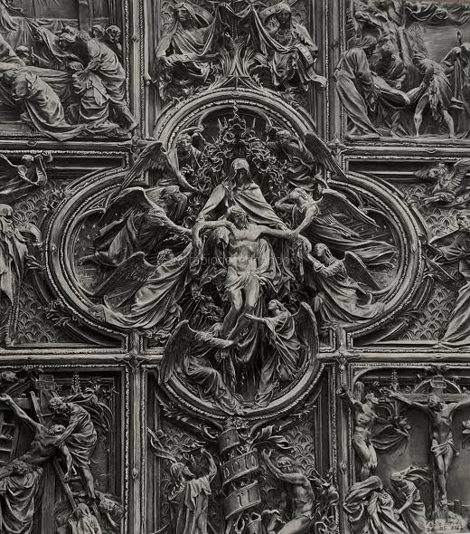

หมวดวาดภาพ (Drawing)

การวาดเส้น (อังกฤษ: Drawing) เป็นพื้นฐานของงานทัศนศิลป์และการออกแบบ โดยการสร้างภาพสองมิติโดยวิธีที่ง่ายและรวดเร็ว ให้เกิดร่องรอยต่าง ๆ โดยใช้เครื่องมือที่อยู่ใกล้ตัว เช่น ถ่าน เศษไม้ หรือแม้แต่นิ้วมือของตนเอง แต่ในปัจจุบันนิยมใช้ ดินสอ ปากกาและหมึก เครยอง ดินสอสี ดินสอถ่าน ชอล์ก ชอล์กสี ปากกามาร์กเกอร์ ปากกาหมึกซึม ซึ่งโดยมากจะเขียนลงบนกระดาษ หรือวัสดุอื่นอย่าง กระดาษแข็ง พลาสติก หนัง ผ้า กระดาน สำหรับการเขียนชั่วคราวอาจใช้กระดานดำหรือกระดานขาว หรือบนอะไรก็ได้ สำหรับศิลปินที่เขียนหรือทำงานการวาดเส้นอาจหมายถึง ช่างสเก็ตภาพ หรือ ช่างเขียนแบบ